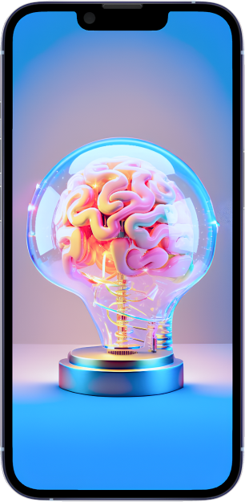
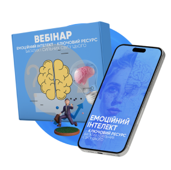
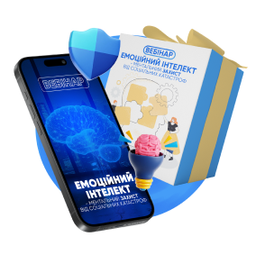
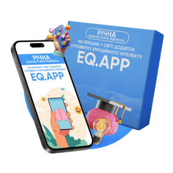
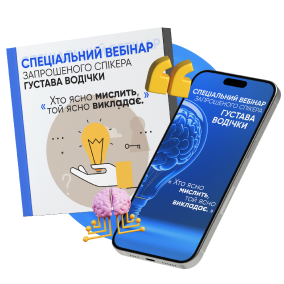
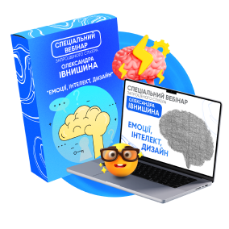
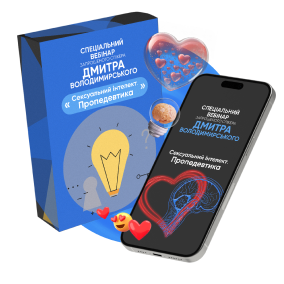

Освітня програма на отримання спеціалізації EQ mentor та
персонального набуття навички розвитку емоційного інтелекту
старт сьогодні
EQ mentor
Опануйте наукову методологію розвитку емоційного інтелекту
впродовж 6-ти тижнів як єдину чарівну пігулку для отримання
бажаного та станьте EQ mentor(ом) для себе, своїх близьких та
клієнтів
Навик управління своїми та чужими емоціями
Перші результати вже після третього заняття
Нові чи покращені романтичні, сімейні, дружні, бізнесові відносини
Приємні зміни в утилітарних запитах - схуднути, помолодіти, вийти
заміж, розбагатіти
Імплементація ресурсу емоційного інтелекту в життєві автоматизми
для блискавичного швидкого отримання бажаного

Унікальність освітньої програми EQ mentor полягає в чотирьох
ключових аспектах:
інноваційна
виключно наукова методологія, яка розроблена на стику
найсучасніших досягнень нейробіології та соціальної
психології
світовий патент,
гранти Держдепу США та Єврокомісії, рецензії університетів
імені Шевченка (Україна), Нью-Касла (Великобританія), Єля
(США)
унікальний
підбір практикумів траєкторії руху для кожного користувача,
відповідно до його психо-емоційної конституції
гарантований
експрес-результат, забезпечений прямою рекомендаційною
допомогою ментора у повсякденних та значимих життєвих
ситуаціях
Програма
Назва уроку
Результат уроку
Лекція 1. Базові компетенції EQ-ментора
Дізнаєтесь як та навчитесь діагностувати корінь усіх
життєвих проблем через психо-емоційні стани
Лекція 2. Готовність, або чи ми емоційно хочемо змін на
краще насправді
Отримаєте навик формуванння реальної, а не навіяної
готовності до особистісних тарнсформацій
Лекція 3. Трансформація емоційного образу минулого
Проведете позитивний емоційний та когнітивний рефрейминг
усіх життєвих подій минулого
Лекція 4. Цінності в емоційному забарвленні
Зрозумієте відмінність реальних цінностей від соціальних
стереотипів, познайомитесь зі своїми реальними цінностями та
усвідомите їх фундаментальну значимість
Лекція 5. Емоційні петлі життєвих сценаріїв
Отримаєте відповіді на питання чому Ви досі не живете життям
мрії, зайдете вихід із Вашого персонального "колеса Сансари"
Лекція 6. Переконання – це самоздійснювані пророцтва в
емоційних прив’язках
Виявите свої токсичні переконання та навчитесь їх змінювати
на вітальні практично моментально
Лекція 7. Лінія життя як емоційна пам’ять
"Перепишите" свою лінію життя зі автосценарною проекцією в
бажане майбутнє
Лекція 8. Вторинні емоційні вигоди в почуттєвих румінаціях
Знайдете причини несвідомої "користі" для Вашого єства від
відсутності у Вас бажаного майбуття
Лекція 9. Робота з SOS в емоційних переживаннях як шлях
виходу зі сценарію
Сформуєте самостійні одиниці свідомого і несвідомого, які
автоматично запускатитмуть у Вас спонукальні процеси до дій
для здійснення мрій
Лекція 10. Залежність рівнів свідомості від емоційного фону
Отримаєте інсайти про взаємнодетерміновані
причинно-наслідкові звʼязки фонових емоційних станів і долею
імовірної спроможності до отримання бажаного
Лекція 11. Практикум. Доленосне цілепокладання і емоційний
магніт
Сформулюєте влучні, дійсно омріяні Вами, ане нав"язані зовні
цілі за використанням емоційної довіри собі, людям, світу і
запустите процес їх автономного досягнення
Лекція 12. Соціопанорма і соціальне довкілля як союзники в
цілепокладанні
Перетворите усіх Ваших знайомих та близьких на однодумців та
союзників у Вашому процесі досягегненні цілі
Лекція 13. "Сумнів – це поцілунок смерті"
Опануєте технологію швидкого прийняття найправильніших та
найеколгічніших рішень у повсякденних та особливо значимих
ситуаціях
Лекція 14. Управління чужими емоціями
Відкриєте для себе сакральне вміння еліт - ключові чинники
впливу на інших людей через код емоцій
тарифи
Самостійний
З куратором
14 лекцій з 28 вправами і психотехніками + рекомендовані
наукові і художні першоджерела до кожного заняття
Лекція 1. Базові компетенції EQ-ментора
Лекція 2. Готовність, або чи ми емоційно хочемо
змін на краще насправді
Лекція 3. Трансформація емоційного образу
минулого
Лекція 4. Цінності в емоційному забарвленні
Лекція 5. Емоційні петлі життєвих сценаріїв
Лекція 6. Переконання – це самоздійснювані
пророцтва в емоційних прив’язках
Лекція 7. Лінія життя як емоційна пам’ять
Лекція 8. Вторинні емоційні вигоди в почуттєвих
румінаціях
Лекція 9. Робота з SOS в емоційних переживаннях
як шлях виходу зі сценарію
Лекція 10. Залежність рівнів свідомості від
емоційного фону
Лекція 11. Практикум. Доленосне цілепокладання
і емоційний магніт
Лекція 12. Соціопанорма і соціальне довкілля як
союзники в цілепокладанні
Лекція 13. «Сумнів – це поцілунок смерті
Лекція 14. Управління чужими емоціями
Комунікація з іншими студентами
Комьюніті з однодумцями в telegram
Комунікація з Сарою Брайт
Персональний зворотній зв'язок по структурі курсу
від куратора
Персональний зворотній зв'язок від Сари з
рекомендаціями по його інсталяції в ваші життєві сценарії
Персональний супровід та розбори Ваших щоденних
життєвих колізій за оперативним запитом
10 сесій-практикумів по досягненню Ваших цілей,
мрій і бажань та вирішенню життєвих проблем у всіх царинах
життя
14 лекцій з 28 вправами і психотехніками + рекомендовані
наукові і художні першоджерела до кожного заняття
Лекція 1. Базові компетенції EQ-ментора
Лекція 2. Готовність, або чи ми емоційно хочемо
змін на краще насправді
Лекція 3. Трансформація емоційного образу
минулого
Лекція 4. Цінності в емоційному забарвленні
Лекція 5. Емоційні петлі життєвих сценаріїв
Лекція 6. Переконання – це самоздійснювані
пророцтва в емоційних прив’язках
Лекція 7. Лінія життя як емоційна пам’ять
Лекція 8. Вторинні емоційні вигоди в почуттєвих
румінаціях
Лекція 9. Робота з SOS в емоційних переживаннях
як шлях виходу зі сценарію
Лекція 10. Залежність рівнів свідомості від
емоційного фону
Лекція 11. Практикум. Доленосне цілепокладання
і емоційний магніт
Лекція 12. Соціопанорма і соціальне довкілля як
союзники в цілепокладанні
Лекція 13. «Сумнів – це поцілунок смерті
Лекція 14. Управління чужими емоціями
Комунікація з іншими студентами
Комьюніті з однодумцями в telegram
Комунікація з Сарою Брайт
Персональний зворотній зв'язок по структурі курсу
від куратора
Персональний зворотній зв'язок від Сари з
рекомендаціями по його інсталяції в ваші життєві сценарії
Персональний супровід та розбори Ваших щоденних
життєвих колізій за оперативним запитом
10 індивідуальних сесій по 2 години кожна з
інсталяцією в Вас нових життєвих сценаріїв з індивідуальним
підбором психотехнік та проведенням терапевтичних сеансів
виключно з метою вирішення усіх ваших проблем та досягнення
бажаного
14 лекцій з 28 вправами і психотехніками + рекомендовані наукові
і художні першоджерела до кожного заняття
Комунікація з іншими студентами
Комунікація з Сарою Брайт
Он-лайн колоквіуми з Сарою Брайт
ціна для Вас
Ціна під час розбору
бонуси для рішучих

Вебінар
"Емоційний інтелект - ключовий ресурс багатих і сильних світу
цього"

Вебінар
"Емоційний інтелект - ментальний захист від соціальних
катастроф"

Річна безкоштовна підписка
на перший у світі Додаток з розвитку
емоційного інтелекту EQ.app, який має 200 000 користувачів у
всьому світі та 2000 вдячних відгуків у AppStore і GooglePlay

Спеціальний вебінар
запрошеного спікера Густава Водічки "Хто ясно мислить, той ясно
викладає"
Відомий український письменник, публіцист, історик, філософ,
громадський діяч. Книги Густава Водічки — рідкісні зразки
іронічної та захопливої малої літературної форми

Спеціальний вебінар
запрошеного спікера Олександра Івнишина "Емоції, інтелект,
дизайн"
Митець, дизайнер, артдиректор десятків рекламних та PR-кампаній
для депутатів і президентів, вітчизняних і зарубіжних бізнесових
гігантів. З початку повномасштабної війни служить в ЗСУ

Спеціальний вебінар
запрошеного спікера Дмитра Володимирського "Сексуальний
інтелект. Пропедевтика"
Сексолог №1 в Україні, автор багатьох методик формування
якісного сексуального життя особистості. Учасник багатьох
телевізійних програм